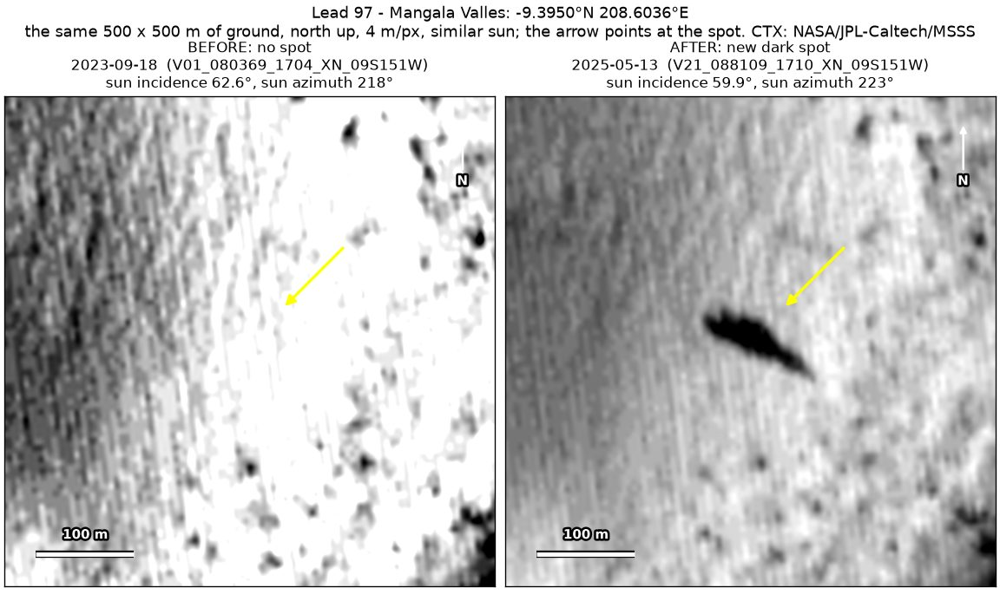
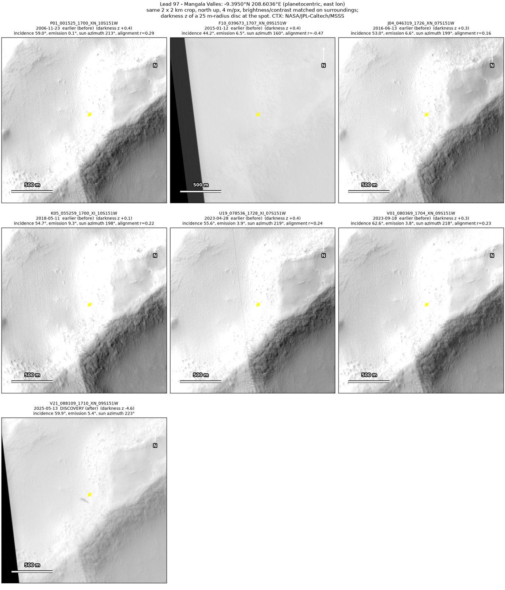
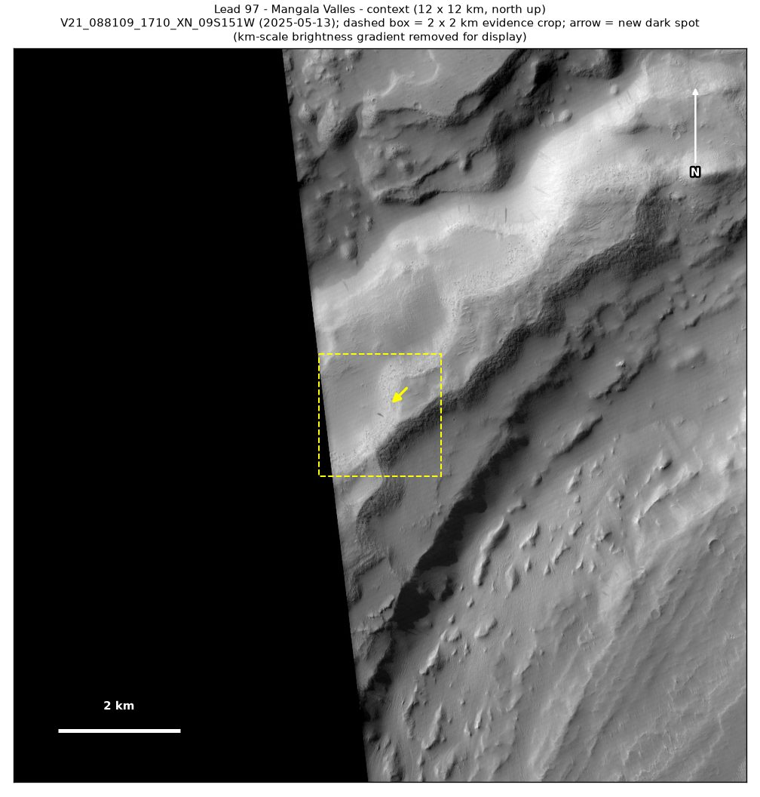
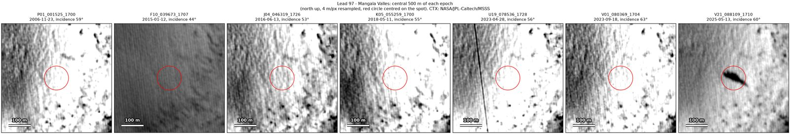
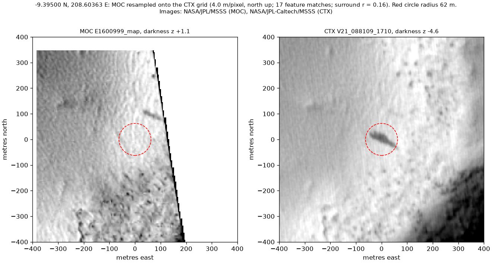

Professor of Mathematics
Paata Ivanisvili
Department of Mathematics, University of California, Irvine

← Possible new impact sites on Mars
Candidate 97: Mangala Valles
Weak · roughly 20%

What changed. An elongated dark streak about 90 × 30 m, shaped like a teardrop with its broad end to the west-north-west, appeared on smooth ground north-west of a rough slope in Mangala Valles, between September 2023 and May 2025, in one CTX image so far.
Why it may be a new impact. Six earlier CTX images from 2006 to 2023, their positions each checked by matching the ground in four parts of the scene, show nothing there, two of them, of April and September 2023, under nearly the same sun as the May 2025 image, and an image of 15 May 2002 from another camera, MOC, shows nothing at the spot either; an impact that strikes at a slant can make an elongated dark zone like this.
- Location
- 9.395° S, 208.604° E (151.396° W)
- Absent
- 23 November 2006, 12 January 2015, 13 June 2016, 11 May 2018, 28 April 2023 and 18 September 2023
- Present
- 13 May 2025
- Size
- Teardrop-shaped dark streak about 90 × 30 m (within a box 94 × 54 m), with its broad end to the west-north-west
- Confidence
- Weak candidate: roughly 20% likely to be a new impact.
- Caveat
- It may well be a wind streak or part of a dust-devil track: the 2002 image shows a dark streak of the same orientation and size about 130 m to the north-east, gone by 2006, so streaks like this form and fade here. It is also seen in only one image, it is a teardrop rather than a round spot, and a fainter streak 290 m to the west-north-west, used as a check, shows clearly in only two of the CTX images, of April 2023 and May 2025. No image from the high-resolution HiRISE camera covers it; the nearest ends 9.7 km away. Like every candidate here, it is unconfirmed: see the caveat.



